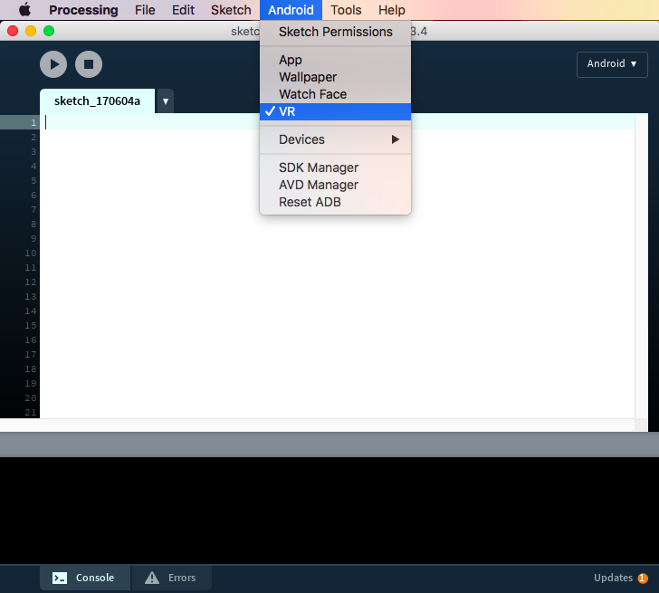
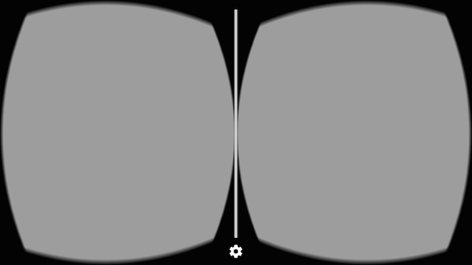
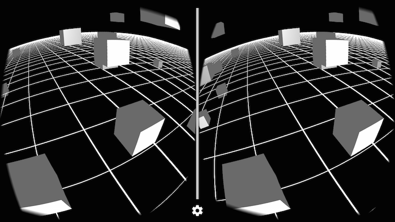

Introduction to VR
Get started with Google VR to write immersive apps using Processing.
(This tutorial is applicable only to version 4+ of the mode)
Google VR
The Google VR platform lets you use your smartphone as a quick entry point to Virtual Reality. The Android mode supports Google Cardboard and Daydream, and you should be able to write 3D sketches that run on the phone as Cardboard apps in stereo mode and respond to the head movement. If you first need to get started with 3D in Processing, check this tutorial out.
Requirements
To use VR with Cardboard, you need an compatible phone with Android 4.1 or higher and a gyroscope sensor for head tracking, and a Cardboard viewer. If you don't have a viewer, you can still run the sketch in monoscopic mode, which will be explained below. For Daydream, you need the View headset, and a Daydream-compatible phone.
If you are using version 4.0-beta3 or newer of the Android mode, all additional packages needed to build VR apps are bundled into the mode, so there are no additional requirements.
If you happen to be using an older beta release of the mode, then you will need to install the processing-cardboard library separately. It provides specialized stereo and monoscopic renderers that work with the phone sensors to automatically update Processing's camera. This library is not available in the Contributions Manager, meaning that you need to install it manually. To do so, first download the latest library zip package from here, uncompress it and copy the cardboard folder into the libraries subfolder inside your sketchbook folder, and then restart Processing.Getting started
You need to select the VR option in the Android menu to make sure that your sketch is built as a VR app:

A basic sketch for VR needs to include the library import, and the STEREO renderer:
import processing.vr.*;
void setup() {
fullScreen(STEREO);
}
void draw() {
}
With this code, you should get an empty stereo view on your phone:

The stereo renderer works by drawing each frame twice, once for each eye. You can know what eye is being drawn in each call of the draw() function using the eyeType variable in the VR renderer:
import processing.vr.*;
void setup() {
fullScreen(STEREO);
}
void draw() {
PGraphicsVR pvr = (PGraphicsVR)g;
if (pvr.eyeType == PVR.LEFT) {
background(200, 50, 50);
} else if (pvr.eyeType == PVR.RIGHT) {
background(50, 50, 200);
} else if (pvr.eyeType == PVR.MONOCULAR) {
background(50, 200, 50);
}
}

You can notice that eyeType could also be MONOSCOPIC, which happens if you use the MONO renderer instead of STEREO. With the monoscopic renderer, the frame is drawn just once but the camera still responds to the movements of the phone.
There is nothing special to add 3D objects to the scene, you simply use the same functions for drawing 3D primitives and shapes with the P3D renderer. You can also add textures, lights, and shader-based effects, like in the following sketch (full code available here):
import processing.vr.*;
PShader toon;
boolean shaderEnabled = true;
void setup() {
fullScreen(STEREO);
noStroke();
fill(204);
toon = loadShader("ToonFrag.glsl", "ToonVert.glsl");
}
void draw() {
if (shaderEnabled == true) shader(toon);
translate(width/2, height/2);
background(80);
directionalLight(204, 204, 204, 1, 1, -1);
sphere(150);
}
void mousePressed() {
if (shaderEnabled) {
shaderEnabled = false;
resetShader();
} else {
shaderEnabled = true;
}
}
Notice the use of translate(width/2, height/2) to make sure that the scene is properly centered in front of of our eyes. This is needed because by default Processing sets the origin to be the upper left corner of the screen, which is convenient for 2D drawing, but not so much in VR. The output should look like this:

Creating a more complex 3D scene
In this example, we will create a 3D scene with a few more objects. Let's start by defining a 2D grid as a reference.
Because performance is very important in VR to keep the framerate as high as possible and avoid simulation sickness in the user, we could rely on PShape objects to store static geometry and so avoid re-generating it in every frame:
import processing.vr.*;
PShape grid;
void setup() {
fullScreen(STEREO);
grid = createShape();
grid.beginShape(LINES);
grid.stroke(255);
for (int x = -10000; x < +10000; x += 250) {
grid.vertex(x, +1000, +10000);
grid.vertex(x, +1000, -10000);
}
for (int z = -10000; z < +10000; z += 250) {
grid.vertex(+10000, +1000, z);
grid.vertex(-10000, +1000, z);
}
grid.endShape();
}
void draw() {
background(0);
translate(width/2, height/2);
shape(grid);
}
Note how the y coordinate of the grid vertices is +1000, since the Y axis in Processing points down, so objects under our line of vision in VR should have positive coordinates.
Now we can add some objects! In order to optimize performance, we can group several 3D shapes inside a single PShape group, which is faster than handling each object separately, like so:
import processing.vr.*;
PShape grid;
PShape cubes;
void setup() {
fullScreen(STEREO);
grid = createShape();
grid.beginShape(LINES);
grid.stroke(255);
for (int x = -10000; x < +10000; x += 250) {
grid.vertex(x, +1000, +10000);
grid.vertex(x, +1000, -10000);
}
for (int z = -10000; z < +10000; z += 250) {
grid.vertex(+10000, +1000, z);
grid.vertex(-10000, +1000, z);
}
grid.endShape();
cubes = createShape(GROUP);
for (int i = 0; i < 100; i++) {
float x = random(-1000, +1000);
float y = random(-1000, +1000);
float z = random(-1000, +1000);
float r = random(50, 150);
PShape cube = createShape(BOX, r, r, r);
cube.setStroke(false);
cube.setFill(color(180));
cube.translate(x, y, z);
cubes.addChild(cube);
}
}
void draw() {
background(0);
lights();
translate(width/2, height/2);
shape(cubes);
shape(grid);
}
The final result should look like this, depending on your viewpoint:
